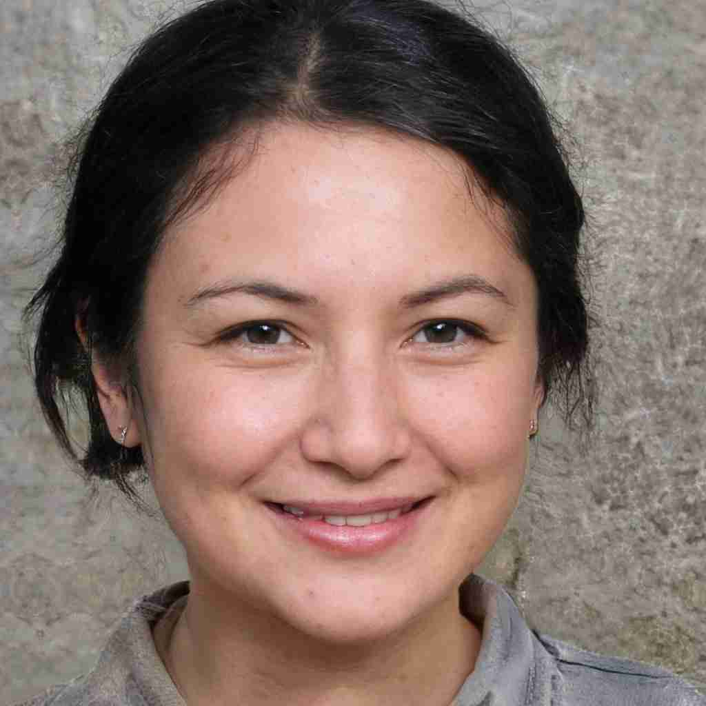
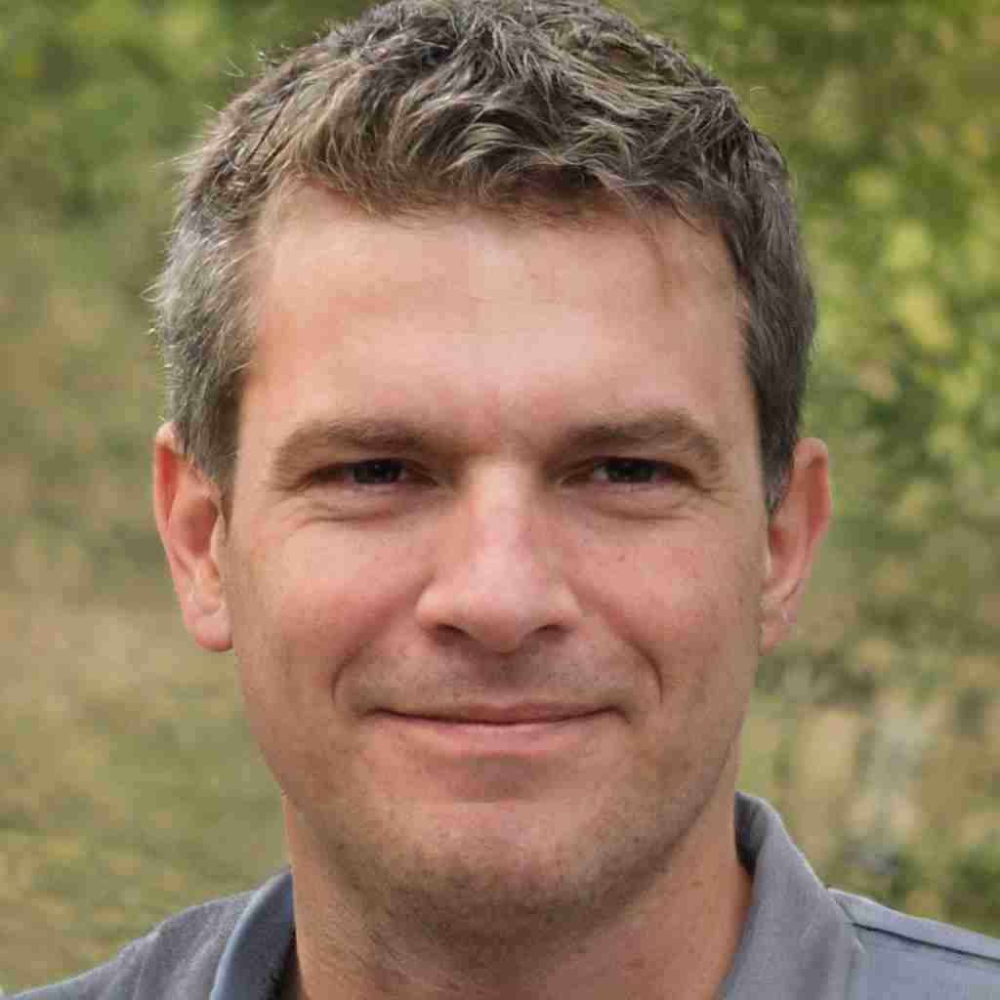

Each activity is run under the instruction of one of our highly trained staff and all safety equipment is provided. Let’s meet some of the Lochquarry staff:

Claire JackPosition: Centre Manager Responsible for: The overall running of the centre and all of its activities Favourite Activity: Pole climb |

Robbie ElliotPosition: Senior Instructor (Land) Responsible for: Overseeing all of the land based activities Favourite Activity: Hillwalking in the beautiful Scottish highlands |
Marion HunterPosition: Centre Administrator Responsible for: Making bookings and arranging activity slots for groups Favourite Activity: Making sure everyone has a great time when the visit Lochquarry |
"Thank you to all the staff who worked so hard, in awful weather, to make sure that all the pupils had an amazing experience" − Mrs Kahn, Hillend Primary School
Interested in exploring more about outdoor adventures in Scotland? Check out the Visit Scotland website for more information.